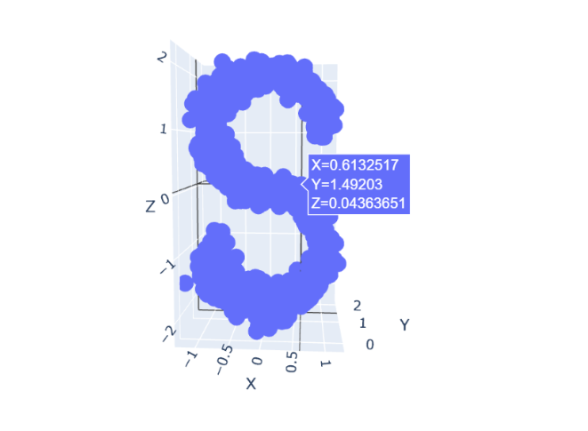
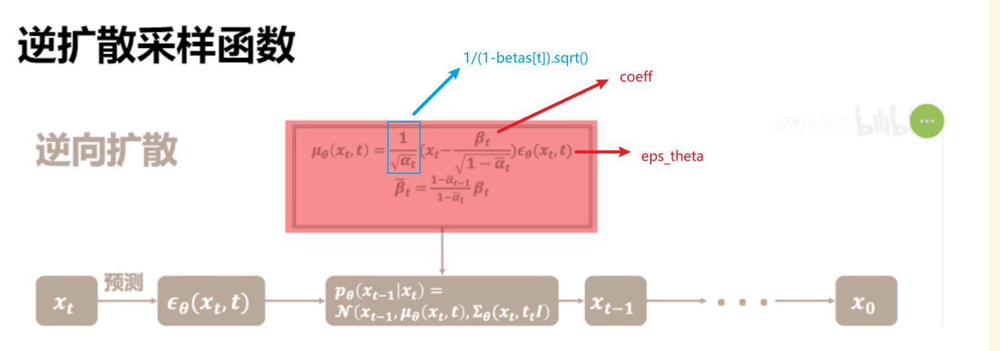
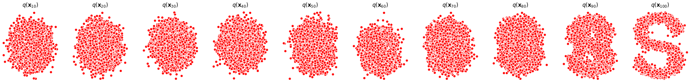

code
构造数据集
from sklearn.datasets import make_s_curve
import torch
# 生成一个带噪音的S，只保留x轴和z轴，并将数据缩小10倍
s_curve, _ = make_s_curve(10**4, noise=0.1)
s_curve = s_curve[:,[0,2]]/10.0
dataset = torch.Tensor(s_curve).float()
print(dataset.shape)

确定超参数的值
# 确定超参数的值
num_steps = 100 # 设置步数为100
betas = torch.linspace(-6,6,num_steps) # 在-6和6之间生成100个等间距的数
betas = torch.sigmoid(betas)*(0.5e-2 - 1e-5)+1e-5 # 应用Sigmoid函数并进行缩放和偏移
alphas = 1-betas # 计算alpha，通常与beta是互补的
alphas_prod = torch.cumprod(alphas,0) # 计算alphas的累积乘积
alphas_prod_p = torch.cat([torch.tensor([1]).float(),alphas_prod[:-1]],0) # 在累积乘积数组的开头添加一个1
alphas_bar_sqrt = torch.sqrt(alphas_prod) # 计算alphas_prod的平方根
one_minus_alphas_bar_log = torch.log(1 - alphas_prod) # 计算1 - alphas_prod的自然对数
one_minus_alphas_bar_sqrt = torch.sqrt(1 - alphas_prod) # 计算1 - alphas_prod的平方根
betas = torch.linspace(-6,6,num_steps):
betas = torch.sigmoid(betas)*(0.5e-2 - 1e-5)+1e-5:
alphas = 1-betas:
alphas_prod = torch.cumprod(alphas,0):
alphas_prod_p = torch.cat([torch.tensor([1]).float(),alphas_prod[:-1]],0):
alphas_bar_sqrt = torch.sqrt(alphas_prod):
one_minus_alphas_bar_log = torch.log(1 - alphas_prod):
one_minus_alphas_bar_sqrt = torch.sqrt(1 - alphas_prod):
Info
sigmoid的缩放和偏移
betas = torch.sigmoid(betas)*(0.5e-2 - 1e-5)+1e-5 # 应用Sigmoid函数并进行缩放和偏移
先在缩放中 -1e-5 之后整体 偏移 +1e-5 这样最大值仍然是0.5e-2
Sigmoid 函数具有一些特性，使其非常适合用于缩放和偏移操作：
Sigmoid 函数的特性 1. 有界性（Boundedness）: Sigmoid 函数的输出范围在 (0, 1) 之间。这意味着无论输入是什么，输出都会被“压缩”到这个范围内。 2. 平滑性（Smoothness）: Sigmoid 是一个平滑函数，这在梯度下降和其他优化算法中是有用的。
缩放（Scaling）
- 通过乘以一个常数（如 (0.5e-2 - 1e-5)），你可以进一步缩小 Sigmoid 函数的输出范围。这样，你可以得到一个非常小的正数，这在某些应用场景中可能是有用的。
偏移（Offsetting）
- 通过加上一个常数（如 1e-5），你可以将整个 Sigmoid 函数沿 y 轴上移。这样，输出值就不会是 0，这在避免数学错误（如除以零）时很有用。
组合使用 - 当你将缩放和偏移组合使用时，你可以得到一个非常灵活的函数，该函数能够将任何输入映射到一个非常具体的范围内。这在机器学习和统计建模中是非常有用的，因为它允许你更好地控制模型的行为。
确定前向过程中的采样值 \(x_t\)
# 计算出任意时刻的x采样值
def q_x(x_0, t):
# 生成和x相同shape的tensor，其中元素是从标准正态分布中随机抽取的
noise = torch.randn_like(x_0)
alphas_t = alphas_bar_sqrt[t]
alphas_1_m_t = one_minus_alphas_bar_sqrt[t]
# 在x[0]的基础上添加噪声
x_t = alphas_t * x_0 + alphas_1_m_t * noise
return x_t
拟合逆向过程中的网络模型
# 拟合逆向过程中的网络模型
class MLPDiffusion(nn.Module):
def __init__(self, n_steps, num_units=128):
super(SimpleMLPDiffusion, self).__init__()
self.layer1 = nn.Linear(2, num_units)
self.layer2 = nn.Linear(num_units, num_units)
self.layer3 = nn.Linear(num_units, num_units)
self.layer4 = nn.Linear(num_units, 2)
self.relu = nn.ReLU()
self.embedding1 = nn.Embedding(n_steps, num_units)
self.embedding2 = nn.Embedding(n_steps, num_units)
self.embedding3 = nn.Embedding(n_steps, num_units)
def forward(self, x, t):
t_emb = self.embedding1(t)
x = self.layer1(x) + t_emb
x = self.relu(x)
t_emb = self.embedding2(t)
x = self.layer2(x) + t_emb
x = self.relu(x)
t_emb = self.embedding3(t)
x = self.layer3(x) + t_emb
x = self.relu(x)
x = self.layer4(x)
return x
损失函数
# 损失函数
def diffusion_loss_fn(model, x_0, alphas_bar_sqrt, one_minus_alphas_bar_sqrt, n_steps):
# 对任意时刻t进行采样计算loss
batch_size = x_0.shape[0]
# 对一个batchsize样本生成随机的时刻t
t = torch.randint(0, n_steps, size=(batch_size//2,))
t = torch.cat([t, n_steps-1-t],dim=0)
t = t.unsqueeze(-1)
a = alphas_bar_sqrt[t] # x0的系数
aml = one_minus_alphas_bar_sqrt[t] # eps的系数
e = torch.randn_like(x_0) # 生成随机噪音eps
x = x_0*a+e*aml # 构造模型的输入
# 送入模型，得到t时刻的随机噪声预测值
output = model(x, t.squeeze(-1))
# 与真实噪声一起计算误差，求平均值
return (e - output).square().mean()
Note
t = torch.randint(0, n_steps, size=(batch_size//2,))：- 使用PyTorch的
torch.randint函数生成一个整数张量（tensor），其中的整数随机地选自[0, n_steps)区间。 size=(batch_size//2,)表示生成的随机整数的数量是batch_size的一半
- 使用PyTorch的
-
t = torch.cat([t, n_steps-1-t], dim=0)：- 使用
torch.cat函数沿着第0维（dim=0）连接两个张量：一个是t，另一个是n_steps-1-t。 n_steps-1-t实际上是对t进行了一个"翻转"，使得新生成的时刻与原始时刻互补。- 这样做的目的通常是为了在同一个批量中有不同的时间步长，可能用于某种对称或平衡的考虑。
- 使用
-
t = t.unsqueeze(-1)：- 使用
unsqueeze函数在最后一个维度（-1表示最后一个维度）增加一个维度。 - 这通常是为了使张量的形状与其他需要进行矩阵运算的张量兼容。
- 使用
逆扩散采样函数

# 逆扩散采样函数
def p_sample_loop(model,shape,n_steps,betas,one_minus_alphas_bar_sqrt):
# 从x_T得到x_T...x_0
cur_x = torch.randn(shape)
x_seq = [cur_x]
for i in reversed(range(n_steps)):
cur_x = p_sample(model,cur_x,i,betas,one_minus_alphas_bar_sqrt)
x_seq.append(cur_x)
return x_seq
def p_sample(model,x,t,betas,one_minus_alphas_bar_sqrt):
# 从x_t得到x_{t-1}
t = torch.tensor([t])
coeff = betas[t] / one_minus_alphas_bar_sqrt[t]
eps_theta = model(x,t)
mean = (1/(1-betas[t]).sqrt())*((x-coeff)*eps_theta)
z = torch.randn_like(x)
sigma_t = betas[t].sqrt()
sample = mean + sigma_t * z # 平均值 + 标准差
return (sample)
训练模型
# 训练模型
print('Training model...')
batch_size = 128
dataloader = torch.utils.data.DataLoader(dataset,batch_size=batch_size,shuffle=True)
num_epoch = 200
model = MLPDiffusion(num_steps)#输出维度是2，输入是x和step
optimizer = torch.optim.Adam(model.parameters(),lr=1e-3)
for t in range(num_epoch):
for idx, batch_x in enumerate(dataloader):
loss = diffusion_loss_fn(model, batch_x, alphas_bar_sqrt, one_minus_alphas_bar_sqrt, num_steps)
optimizer.zero_grad()
loss.backward()
# 对模型参数的梯度进行裁剪，以防梯度爆炸问题
torch.nn.utils.clip_grad_norm_(model.parameters(), 1.)
optimizer.step()
if(t % 100 == 0):
print(loss)
x_seq = p_sample_loop(model, dataset.shape, num_steps, betas, one_minus_alphas_bar_sqrt)
fig,axs = plt.subplots(1, 10, figsize=(28, 3))
for i in range(1,11):
cur_x = x_seq[i * 10].detach()
axs[i-1].scatter(cur_x[:, 0], cur_x[:, 1], color='red',edgecolor='white')
axs[i-1].set_axis_off()
axs[i-1].set_title('$q(\mathbf{x}_{'+str(i*10)+'})$')
Question
torch.nn.utils.clip_grad_norm_(model.parameters(), 1.) ?
在深度学习中，梯度爆炸是一个常见的问题，尤其在处理序列数据或者复杂网络结构时。梯度爆炸就是在训练过程中，模型的梯度变得非常大，以至于更新后的模型参数值变得不稳定，这可能导致模型无法收敛。
为了解决这个问题，一种常见的做法是进行梯度裁剪（Gradient Clipping）。梯度裁剪的基本思想是设置一个阈值，当计算出的梯度值超过这个阈值时，就将其压缩回这个范围。
具体来说，在 PyTorch 中，torch.nn.utils.clip_grad_norm_函数就是用于进行梯度裁剪的。这个函数接收两个主要参数：
model.parameters(): 这是模型的所有可训练参数。1.: 这是设置的梯度裁剪阈值。
该函数的工作原理如下：
- 首先，它会计算所有模型参数的梯度的范数（通常是 2-范数）。
- 然后，与设定的阈值（在这里是 1）进行比较。
- 如果梯度的范数大于这个阈值，那么就会按比例缩小所有梯度，使得范数等于这个阈值。
通过这种方式，torch.nn.utils.clip_grad_norm_确保了所有参数的梯度范数不会超过设定的阈值，从而避免了梯度爆炸问题。这通常有助于稳定模型的训练过程。
完整code
import matplotlib.pyplot as plt
from sklearn.datasets import make_s_curve
import torch
import torch.nn as nn
# 生成一个带噪音的S，只保留x轴和z轴，并将数据缩小10倍
s_curve, _ = make_s_curve(10**4, noise=0.1)
s_curve = s_curve[:,[0,2]]/10.0
dataset = torch.Tensor(s_curve).float()
print(dataset.shape)
# 确定超参数的值
num_steps = 100 # 设置步数为100
betas = torch.linspace(-6,6,num_steps) # 在-6和6之间生成100个等间距的数
betas = torch.sigmoid(betas)*(0.5e-2 - 1e-5)+1e-5 # 应用Sigmoid函数并进行缩放和偏移
alphas = 1-betas # 计算alpha，通常与beta是互补的
alphas_prod = torch.cumprod(alphas,0) # 计算alphas的累积乘积
alphas_prod_p = torch.cat([torch.tensor([1]).float(),alphas_prod[:-1]],0) # 在累积乘积数组的开头添加一个1
alphas_bar_sqrt = torch.sqrt(alphas_prod) # 计算alphas_prod的平方根
one_minus_alphas_bar_log = torch.log(1 - alphas_prod) # 计算1 - alphas_prod的自然对数
one_minus_alphas_bar_sqrt = torch.sqrt(1 - alphas_prod) # 计算1 - alphas_prod的平方根
# 计算出任意时刻的x采样值
def q_x(x_0, t):
# 生成和x相同shape的tensor，其中元素是从标准正态分布中随机抽取的
noise = torch.randn_like(x_0)
alphas_t = alphas_bar_sqrt[t]
alphas_1_m_t = one_minus_alphas_bar_sqrt[t]
# 在x[0]的基础上添加噪声
x_t = alphas_t * x_0 + alphas_1_m_t * noise
return x_t
# 拟合逆向过程中的网络模型
class MLPDiffusion(nn.Module):
def __init__(self, n_steps, num_units=128):
super(MLPDiffusion, self).__init__()
self.layer1 = nn.Linear(2, num_units)
self.layer2 = nn.Linear(num_units, num_units)
self.layer3 = nn.Linear(num_units, num_units)
self.layer4 = nn.Linear(num_units, 2)
self.relu = nn.ReLU()
self.embedding1 = nn.Embedding(n_steps, num_units)
self.embedding2 = nn.Embedding(n_steps, num_units)
self.embedding3 = nn.Embedding(n_steps, num_units)
def forward(self, x, t):
t_emb = self.embedding1(t)
x = self.layer1(x) + t_emb
x = self.relu(x)
t_emb = self.embedding2(t)
x = self.layer2(x) + t_emb
x = self.relu(x)
t_emb = self.embedding3(t)
x = self.layer3(x) + t_emb
x = self.relu(x)
x = self.layer4(x)
return x
# 损失函数
def diffusion_loss_fn(model, x_0, alphas_bar_sqrt, one_minus_alphas_bar_sqrt, n_steps):
# 对任意时刻t进行采样计算loss
batch_size = x_0.shape[0]
# 对一个batchsize样本生成随机的时刻t
t = torch.randint(0, n_steps, size=(batch_size // 2,))
t = torch.cat([t, n_steps - 1 - t], dim=0)
t = t.unsqueeze(-1)
a = alphas_bar_sqrt[t] # x0的系数
aml = one_minus_alphas_bar_sqrt[t] # eps的系数
e = torch.randn_like(x_0) # 生成随机噪音eps
x = x_0 * a + e * aml # 构造模型的输入
# 送入模型，得到t时刻的随机噪声预测值
output = model(x, t.squeeze(-1))
# 与真实噪声一起计算误差，求平均值
return (e - output).square().mean()
# 逆扩散采样函数
def p_sample_loop(model,shape,n_steps,betas,one_minus_alphas_bar_sqrt):
# 从x_T得到x_T...x_0
cur_x = torch.randn(shape)
x_seq = [cur_x]
for i in reversed(range(n_steps)):
cur_x = p_sample(model,cur_x,i,betas,one_minus_alphas_bar_sqrt)
x_seq.append(cur_x)
return x_seq
def p_sample(model,x,t,betas,one_minus_alphas_bar_sqrt):
# 从x_t得到x_{t-1}
t = torch.tensor([t])
coeff = betas[t] / one_minus_alphas_bar_sqrt[t]
eps_theta = model(x,t)
mean = (1/(1-betas[t]).sqrt())*((x-coeff)*eps_theta)
z = torch.randn_like(x)
sigma_t = betas[t].sqrt()
sample = mean + sigma_t * z # 平均值 + 标准差
return (sample)
# 训练模型
print('Training model...')
batch_size = 128
dataloader = torch.utils.data.DataLoader(dataset,batch_size=batch_size,shuffle=True)
num_epoch = 200
model = MLPDiffusion(num_steps)#输出维度是2，输入是x和step
optimizer = torch.optim.Adam(model.parameters(),lr=1e-3)
for t in range(num_epoch):
for idx, batch_x in enumerate(dataloader):
loss = diffusion_loss_fn(model, batch_x, alphas_bar_sqrt, one_minus_alphas_bar_sqrt, num_steps)
optimizer.zero_grad()
loss.backward()
# 对模型参数的梯度进行裁剪，以防梯度爆炸问题
torch.nn.utils.clip_grad_norm_(model.parameters(), 1.)
optimizer.step()
if(t % 100 == 0):
print(loss)
x_seq = p_sample_loop(model, dataset.shape, num_steps, betas, one_minus_alphas_bar_sqrt)
fig,axs = plt.subplots(1, 10, figsize=(28, 3))
for i in range(1,11):
cur_x = x_seq[i * 10].detach()
axs[i-1].scatter(cur_x[:, 0], cur_x[:, 1], color='red',edgecolor='white')
axs[i-1].set_axis_off()
axs[i-1].set_title('$q(\mathbf{x}_{'+str(i*10)+'})$')
效果图
